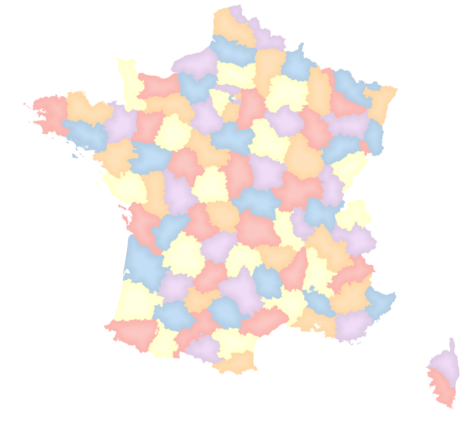

Table of content
Théorème des quatre couleurs
https://fr.wikipedia.org/wiki/Th%C3%A9or%C3%A8me_des_quatre_couleurs
Extrait de Wikipédia:
Le théorème des quatre couleurs indique qu'il est possible, en n'utilisant que quatre couleurs différentes, de colorier n'importe quelle carte découpée en régions connexes, de sorte que deux régions adjacentes (ou limitrophes), c'est-à-dire ayant toute une frontière (et non simplement un point) en commun reçoivent toujours deux couleurs distinctes.
Objectif
Ajouter à une couche existante les informations pour réaliser ce genre cartographique:

Au final, nous ne souhaitons une nouvelle couche.
Étapes
- En utilisant, le menu